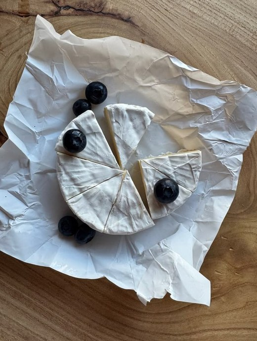

My dear Theo,
I am writing to you in a great hurry, but I want to send you a word or two anyway.
First, I must tell you that I received the money you sent, for which I thank you very much. I had to pay several things at once, including my rent, so it came in very handy.
I am again going through a period of working hard and then suddenly becoming slack, of patient waiting and then impatience, of hope and then despair—it is repeating itself again. Still, if I keep on trying, I shall understand watercolors better. If it were easy, one would take no pleasure in it. So I must go on painting.
I have been working on several watercolors lately, trying to get more life into them. It is no easy task, and sometimes I feel quite discouraged, but then I remember that nothing worthwhile comes easily.
I hope you are well and that your work is going satisfactorily. Do write to me again as soon as you have a moment to spare.
With a handshake in thought,
Ever yours,
Vincent
